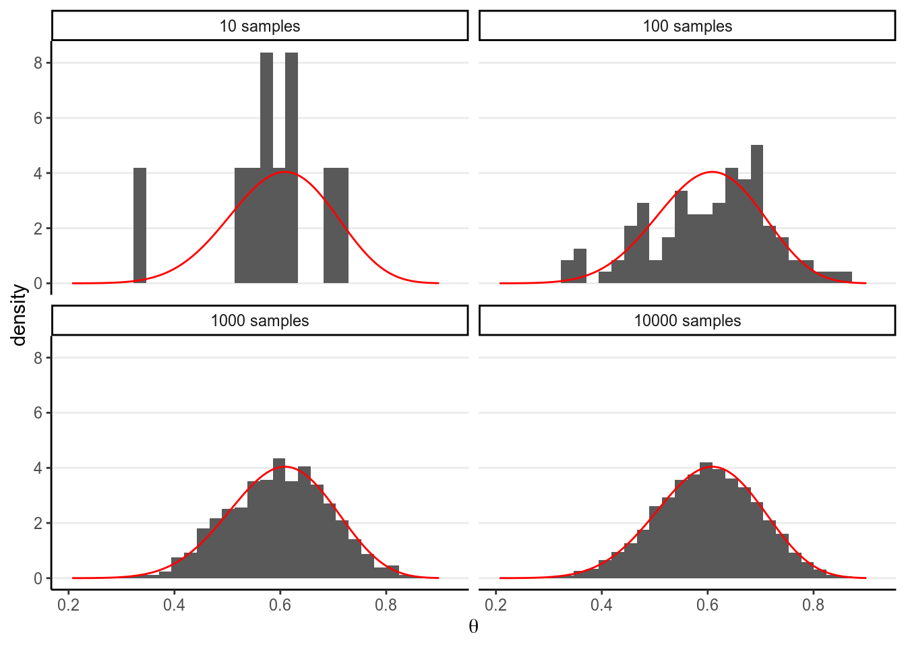
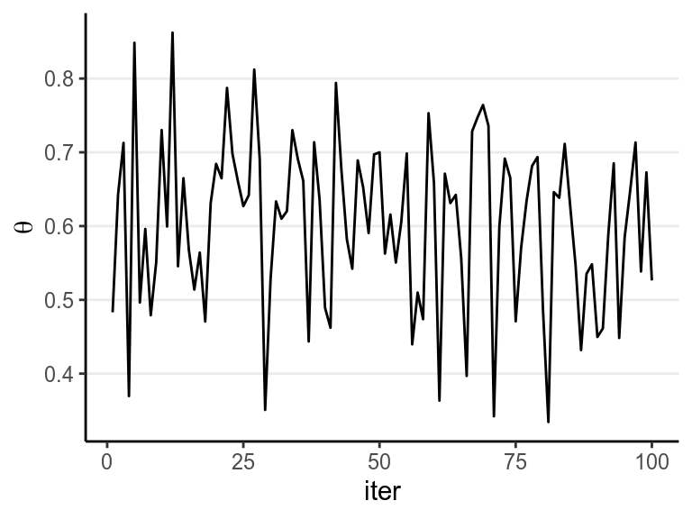
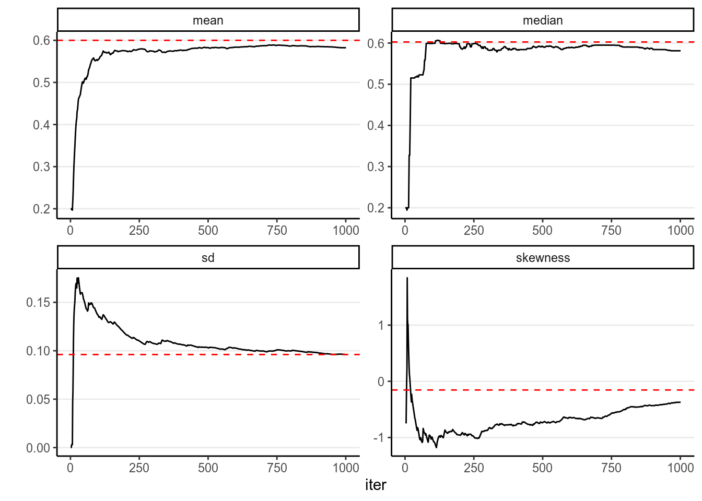
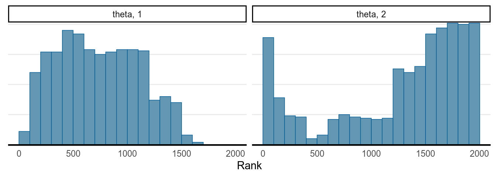
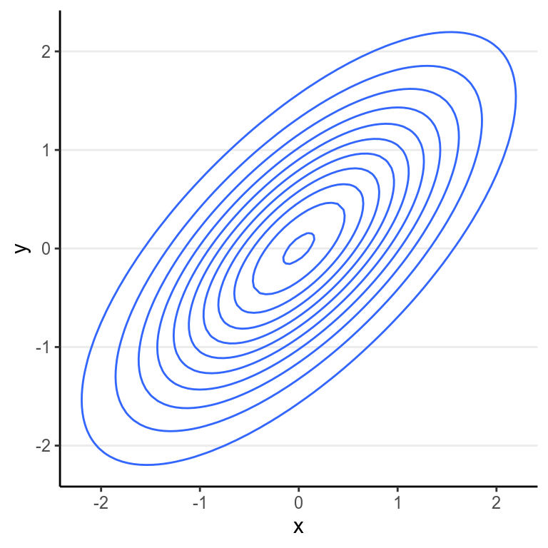
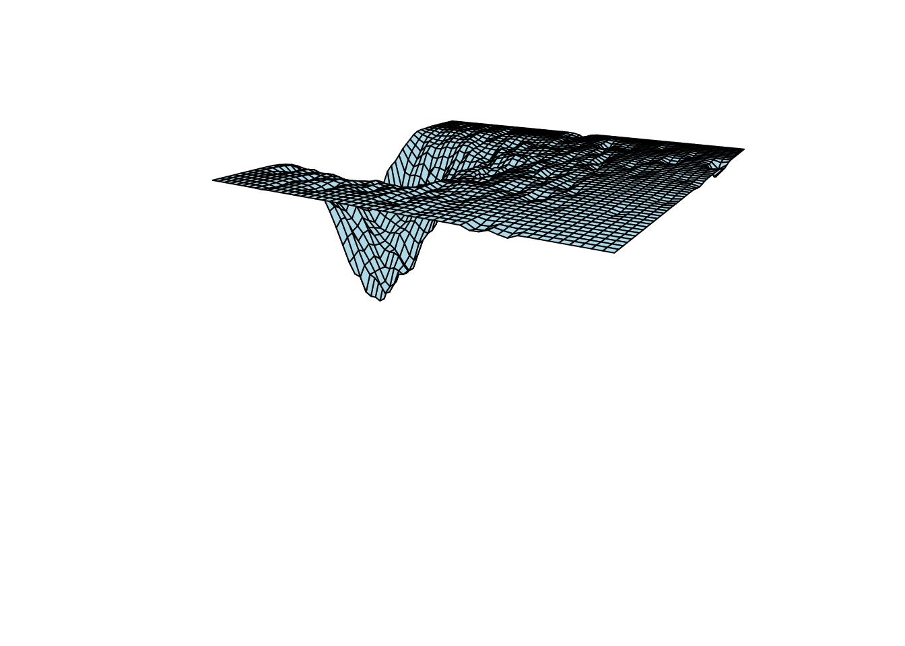

Chapter 6 Markov Chain Monte Carlo
So far in this class, we have seen a few examples with Bayesian inferences where the posterior distribution concerns only one parameter, like the binomial and the Poisson model, and also worked on some group comparison examples. We have also discussed different approaches to obtain/approximate the posterior, and worked on a few examples where we simulated posterior samples from the posterior, including grid approximation and MCMC. In this lecture, we will provide a more conceptual discussion on the simulation method, see why we need special methods together called Markov Chain Monte Carlo, and extend it to multiple parameter problems. We will specifically discuss four MCMC methods that you will commonly see in Bayesian literature:
- The Metropolis algorithm
- The Metropolis-Hastings algorithm
- The Gibbs sampler
- Hamiltonian Monte Carlo
- No U-turn sampler (and several variants)
But first, let’s talk about what the Monte Carlo method is.
6.1 Monte Carlo Simulation With One Unknown
In a previous example, we see that with a conjugate prior (e.g., Beta), the posterior distribution is standard (Beta), and with R we can easily draw simulation samples from the posterior distribution. The more samples we draw, the better we can approximate the posterior distribution based on the simulation samples. This is exactly the same reason that if we have a very large sample, we can very precisely describe our population; here the true posterior distribution is considered the population, and the simulation samples we draw are, well, a sample from the population. With 10,000 or 100,000 samples, we can very accurately describe our population.
For example, if using a conjugate prior we know that the posterior is a
\(\mathrm{Beta}(15, 10)\) distribution, consider drawing 10, 100, 10,00, and
10,000 samples from it using the R function rbeta, and contrast the density
estimated from the samples (in the histogram) with that of the real
\(\mathrm{Beta}\) distribution (in red).
># `stat_bin()` using `bins = 30`. Pick better value with `binwidth`.
The figure below shows the values when drawing 100 samples in time order:

So we can say that when the number of posterior samples is very large, the sample distribution converges to the population density. The Monte Carlo method will work for many situations. Note, of course, the number of simulation samples is controlled by the analysts; it is totally different from sample size, which is fixed and is a property of the data.
In addition, most of the descriptive statistics (e.g., mean, SD) of the sample will converge to the corresponding values of the true posterior distribution. The graphs below showed how the mean, median, SD, and skewness converge to the true value (red dashed lines) when the number of simulation samples increases.

6.2 Markov Chain Monte Carlo (MCMC) With One Parameter
However, the above Monte Carlo simulation works in the above example because (a)
we know exactly that the posterior distribution is a beta distribution, and (b)
R knows how to draw simulation samples form a beta distribution (with rbeta).
However, as we progress through the class, it is more of an exception that we
can use conjugate prior distribution, so in general neither (a) nor (b) would
hold. For example, if we instead use a normal distribution for the prior of
\(\theta\), we may get something like
\[P(\theta | y) = \frac{\mathrm{e}^{-(\theta - 1 / 2)^2} \theta^y (1 - \theta)^{n - y}} {\int_0^1 \mathrm{e}^{-(t - 1 / 2)^2} t^y (1 - t)^{n - y} \; \mathrm{d}t}\]
and it would be very hard, if possible at all, to directly draw simulation samples from the posterior. Luckily, we have a clever (sets of) algorithm called Markov Chain Monte Carlo, which provides a way to draw samples from the posterior distribution without the need to know everything about the posterior distribution. Indeed, for some algorithms they only require that we know, for every two possible values of \(\theta\), the ratio of their corresponding densities.
6.2.1 The Metropolis algorithm
The Metropolis algorithm can generally be used to draw samples from a distribution as long as the density ratio of any two points can be computed. Remember in Bayesian inference, for two values in the posterior distribution, \(\theta_1\) and \(\theta_2\), \[\begin{align*} P(\theta = \theta_1 | \boldsymbol{\mathbf{y}}) & = \frac{P(\boldsymbol{\mathbf{y}} | \theta = \theta_1) P(\theta = \theta_1)} {P(y)} \\ P(\theta = \theta_2 | \boldsymbol{\mathbf{y}}) & = \frac{P(\boldsymbol{\mathbf{y}} | \theta = \theta_2) P(\theta = \theta_2)} {P(y)} \end{align*}\] Therefore, if we take the ratio of the posterior densities, we have \[\frac{P(\theta = \theta_2 | \boldsymbol{\mathbf{y}})}{P(\theta = \theta_1 | \boldsymbol{\mathbf{y}})} = \frac{P(\boldsymbol{\mathbf{y}} | \theta = \theta_2) P(\theta = \theta_2)} {P(\boldsymbol{\mathbf{y}} | \theta = \theta_1) P(\theta = \theta_1)},\] which does not involve \(P(y)\). Therefore, even though we may not know \(P(\theta = \theta_1 | \boldsymbol{\mathbf{y}})\) as it involves \(P(y)\) as the denominator, we can still compute the density ratio.
In addition, the Metropolis algorithm requires the use of a proposal distribution, which can be any symmetric distribution. Common choices are a normal distribution or a uniform distribution. For example, let’s assume we will be using a \(N(0, 1)\) proposal distribution.
The steps of a Metropolis algorithm are:
- Randomly start from a certain point in the parameter space, and call that point \(\theta_0\)
- Randomly generate a sampled value from a \(N(\theta_0, 1)\) distribution. Call this proposed value \(\theta^\text{prop}\)
- Compute the density ratio \([P(\theta = \theta^\text{prop} | \boldsymbol{\mathbf{y}})] / [P(\theta = \theta_0 | \boldsymbol{\mathbf{y}})]\)
- If the ratio is larger than 1, accept \(\theta^\text{prop}\) and include this value in the sample
- If the ratio is smaller than 1, accept \(\theta^\text{prop}\) with probability equal to the density ratio. For example, if the ratio is 0.7, one first generated a simulated value, \(u\), from a uniform distribution between 0 and 1 (i.e., \(U(0, 1)\)). If \(u\) is smaller than the ratio, accept \(\theta^\text{prop}\) and include it in the sample. Otherwise, reject the proposed value, and include \(\theta_0\) (again) in the sample
- After accepting \(\theta^\text{prop}\) or \(\theta_0\) in the sample, denote the accepted value as \(\theta_0\), and repeat steps 2 to 6.
Under mild conditions, and after the chain runs for a while, the above algorithm will generate representative samples from the target posterior distribution.
6.2.1.1 Shiny App:
To see a visual demonstration, you may run the shiny app I created by typing in R
Each step in MCMC is called an iteration. However, the sampled values are
not independent, which means they are different from those generated using
functions like rbeta or rnorm. Instead, the resulting sampled values will
form a Markov chain, meaning that each sampled value is
correlated with the previous value. This is because each time we propose a new
value, the proposal distribution is centered at the previous value. As long as
the previous value affects which values are likely proposed, the two consecutive
values are not independent.
You can see a trace plot below, which is generally the first thing
you need to check after running an MCMC sampling. You will see that consecutive
samples tend to be closer or the same. Compare this with the one in a previous
section using rbeta.

The graph on the right panel is an autocorrelation plot, which shows the correlations between sampled values that are \(l\) iterations apart. The table below has three columns, the first one is the first 10 sampled values from the chain, the second is the lag-1 behind, meaning values in the 2nd to the 11th iterations, and the third column is the lag-2 values. A lag-1 autocorrelation is the correlation between the first column and the second column, and a lag-2 autocorrelation is the correlation between the first column and the third column. The graph above shows that the correlation between values from two consecutive iterations have a correlation of 0.656.
># # A tibble: 10 x 3
># self lag1 lag2
># <dbl> <dbl> <dbl>
># 1 0.2 0.2 0.2
># 2 0.2 0.2 0.194
># 3 0.2 0.194 0.194
># 4 0.194 0.194 0.194
># 5 0.194 0.194 0.194
># 6 0.194 0.194 0.328
># 7 0.194 0.328 0.328
># 8 0.328 0.328 0.415
># 9 0.328 0.415 0.515
># 10 0.415 0.515 0.5156.2.2 The Metropolis-Hastings Algorithm
The Metropolis-Hastings (MH) algorithm is a generalization of the Metropolis algorithm, where it allows a proposal distribution that is not symmetric, with some additional adjustment made. The MH algorithm can perform better for some cases where the target distribution is bounded and non-symmetric, but this is beyond the scope of this course. For multiparameter problems, the Gibbs sampler which we will talk about later in this note is actually also a special case of the MH algorithm.
6.3 Markov Chain
A Markov chain is a chain of random samples, where the next sample depends on where the previous sample(s) are at. Recall that in the Metropolis algorithm, the proposal distribution is centered at the previous sample. This is called first order Markov chain, as the current state only depends on just the previous 1 state.
Under a condition called ergodicity, a Markov chain will converge to a stationary distribution. This means that, after a certain amount of samples, when the chain arrives at the high density region of the posterior distribution, all simulated samples after that can be considered a random (but correlated) sample of the posterior distribution.
Like regular simulation, as long as you have enough samples, the sample density will converge to the population density. However, it takes thousands or tens of thousands Metropolis samples to make the sample density sufficiently close to the target posterior distribution, which is much more than what is required with Monte Carlo simulation with independent samples. As you can see below, with 1,000 samples, the summary statistics are still not very close to the true values.

6.4 Effective Sample Size (\(n_\text{eff}\))
The information contained in 1,000 simulated samples using the Metropolis
algorithm in this example was approximately equivalent to
207.517 samples if the simulated samples are
independent. In other words, the effective sample size of the 1,000 simulated
samples is only 207.517. Therefore, using MCMC
requires drawing much more samples than using techniques for drawing independent
samples like the rbeta function.
If the proposal distribution is exactly the same as the posterior, then we can accept all proposed value. Why? Because each proposed value is already a random sample from the posterior! This will be relevant when we talk about Gibbs sampling.
6.5 MC Error
The Monte Carlo error or Monte Carlo standard error tells the margin of error when using the MCMC samples to estimate the posterior mean. A simple method to estimate the MC error is: \[\mathit{SE}_\mathrm{mc} = \sqrt{\frac{\widehat{\mathrm{Var}}(\theta | \boldsymbol{\mathbf{y}})}{n_\text{eff}}}\] In the above example, \(\mathit{SE}_\mathrm{mc} = 0.007\). So if the true posterior mean is 0.6, using 1,000 MCMC samples will likely give an estimated posterior mean in the range [0.593, 0.607]. Generally, we would like to have something more precise, and it’s better to get an \(n_\text{eff}\) above 1,000.
6.6 Burn-in/Warmup
Every Markov chain needs a certain amount of iterations to reach the stationary distribution. Whereas in the previous examples, the chain quickly get to the regions with relative high density, for some situations, especially for multiparameter problems, it usually takes hundreds or thousands of iterations to get there, as shown in the graph below (for approximating a \(N[15, 2]\) distribution).

Iterations obtained before a Markov chain reaches the stationary distribution are called burn-in in WinBUGS and warmup in Stan. As they are not considered samples of the posterior distribution, they should not be included when approximating the posterior distribution. In Stan, the first half of the samples (e.g., 1,000 out of 2,000) are discarded.
When people say they get \(8,000\) samples/iterations using MCMC, \(8,000\) is the number the burn-in/warmup.
Warmup is the term used in STAN to tune the algorithm so it’s not the same as burn-in as discussed here. See the chapter by McElreath (2016).
6.6.1 Thinning
You will sometimes hear the term thinning, which means only saving every \(t\)th sample, where \(t\) is the thinning interval. For example, based on the autocorrelation plot it appears that the samples are approximated uncorrelated when they are 11 lag apart, so instead of using all 1,000 samples, we just use the 1st, 12th, 23rd, \(\ldots\) samples. However, this is generally not recommended unless you have a concern for not having enough storage space, which happens when, for example, using multiple imputation to handle missing data. Otherwise, it is strongly recommended that you include all draws after burn-in/warmup, even if they are correlated.
6.7 Diagnostics of MCMC
6.7.1 Mixing
One thing you should look at to diagnose the convergence of a Markov chain is the trace plot. Look at the three examples below:


When multiple chains were run, each with a different initial value, it was recently recommended that researchers examine the rank plot (see this paper) as it is more robust.
The first graph on the left shows good mixing behavior as it explores the region with most of the density (bounded by the blue dashed line) smoothly and bounces from one point to another quickly. For the middle graph, this is a chain where, although in every iteration it moves to a new place, the jump is relatively small, so it takes a long time to get from one end of the distribution to another end, and it never explores regions that are just within the blue lines and outside of the blue lines. For the bottom graph, you can see it tends to stay in one point for quite some time, and at some point it takes almost 100 iterations for it to move.
The first graph demonstrates good mixing, which will converge to a stationary distribution (the posterior) pretty quickly. The middle and the bottom graph demonstrates poor mixing, which takes a lot more iterations to converge; if you stop the chain before that, you can get a biased representation of the posterior distribution.
The autocorrelation plots on the right show the corresponding autocorrelations. You can see that whereas the autocorrelation dies out for the first chain pretty soon (at about the 10th lag), it remains high for the other two cases.
6.7.2 Acceptance Rate
If you’re using the Metropolis/MH algorithm, you want to monitor the acceptance rate and make sure it is within optimal range. If you accept almost every time, that tells you that each time the chain only jumps a very small step (so that the acceptance ratio is close to 1 every time), which will make the algorithm slow in converging to the stationary distribution. On the other hand, if the acceptance rate is very low, then that says that the chain got stuck to just a few locations and it takes hundreds of iterations for it to make one jump. For the Metropolis/MH algorithm, an optimal acceptance rate would be something between 10% to 60%. For Hamiltonian Monte Carlo and other newer method, which we will discuss later, the optimal acceptance rate would be much higher, from 80% to 99%, or even higher.
6.7.3 Diagnostics Using Multiple Chains
Another important thing to check is to see the convergence with multiple chains. So far we’ve been just talking about one chain, but it is common practice to use two or more chains (and 4 chains are generally recommended nowadays), each starting at a different, preferably more extreme, place, and see whether they explore a similar region.
The two plots below are called rank plots. The top one shows a relatively healthy chains, as the ranks are relatively uniformly distributed (meaning that one chain does not have higher values than another for a long period of time). The plot below, however, shows an unhealthy chain.
># Warning: The following arguments were unrecognized and ignored: n_warmup
># Warning: The following arguments were unrecognized and ignored: n_warmup
6.7.3.1 \(\hat{R}\), a.k.a Potential Scale Reduction Factor
A commonly used numerical index in diagnosing convergence is \(\hat{R}\), also called the potential scale reduction factor, proposed by Gelman and Rubin (1992) and later an extension for multivariate distributions by Brooks and Gelman (1997). \(\hat{R}\) measures the ratio of the total variability combining multiple chains to the within-chain variability. To understand this, remember in ANOVA, the \(F\)-ratio is a measure of \[F = \frac{\text{Between-group difference} + \text{error}}{\text{error}}\]
\(\hat{R}\) has a very similar meaning conceptually, with error meaning the
within-chain variance. When the Markov chains converge, they reach the
stationary distribution. As each chain is based on the same posterior
distribution, they should have the same variance, meaning that after the
chains converge, there should be no differences between the chains, and so
\(\hat{R}\) should be very close to 1.0. Note that in Stan, \(\hat{R}\) is computed
by splitting each chain into half. So if you have two chains, \(\hat{R}\) will
be based on four groups.
For the two graphs above, the first one has an \(\hat{R}\) of 1.021, and the second one has an \(\hat{R}\) of 2.93. Gelman et al. (2013) recommended an \(\hat{R}\) less than 1.1 for acceptable convergence of the Markov chains, but more recently a more stringent cutoff of 1.01 is proposed.
It should also be pointed out that there are many versions of \(\hat R\) being used in the literature, but researchers rarely discussed which version they used. In STAN, the version was mainly based on Gelman et al. (2013), but in future upgrade it’s likely going to use a newer and more robust \(\hat R\) based on this paper.
6.8 Multiple Parameters
If you think about some of the statistical techniques you have learned, there are generally more than one parameter. For example, with a linear regression, you have at least one parameter for the intercept, \(\beta_0\), and one parameter for the slope, \(\beta_1\). With two parameters, when we generate posterior samples, we want to get more points in the regions with higher density.
It’s helpful to understand this with an example. Look at the 3D plot below:

Another way to show the joint distribution of two variables is to use a contour plot to show the lines at different density levels:

With multiple parameters, one can still use the Metropolis/MH algorithm. However, one will need a multidimensional proposal distribution, and it is usually rather inefficient. Before 2010, a more efficient algorithm is the Gibbs sampling, which relies on conditional distributions as proposal distributions to sample each dimension the posterior distributions. The two popular Bayesian language, BUGS and JAGS, both used Gibbs sampling. You likely will still see it in a lot of articles doing Bayesian analyses. However, Gibbs sampling is rather restrictive as it relies on conjugate priors, so your choices of priors are rather limited. Also, it may run into convergence issues in more complex models such as multilevel models. Given that STAN uses different and usually more efficient sampling methods, I will not go into detail on Gibbs sampling, and will just move on to the ones that STAN uses. To learn more, you may see the following Shiny app.
6.9 Hamiltonian Monte Carlo
Stan is using something different than the Metropolis-Hastings algorithm or
the special case that is Gibbs sampling. Although its algorithms have gone
through multiple revision, and in the next few updates they may have some
changes as well, their basic algorithm is under the umbrella of Hamiltonian
Monte Carlo or hybrid Monte Carlo (HMC). The algorithm is a bit complex and I
will just try to help you develop some intuition of the algorithm, hopefully
enough to help you diagnose the Markov chains.
- It produces simulation samples that are much less correlated, meaning that if you get 10,000 samples from Gibbs and 10,000 samples from HMC, HMC generally provides a much higher effective sample size.
- When there is a problem in convergence, HMC tends to raise a clear red flag, meaning it goes really really wrong.
So now, how does HMC work? First, consider a two-dimensional posterior below, which is based on a real data example of a hierarchical model, with two of the parameters \((\mu, \tau)\).

For illustration of HMC, let’s turn it upside down:

HMC requires you to think of the inverted posterior density a park for ice skating. Imagine if you stand on a certain point of a slope and does not move your body, then you will soon fall down to the bottom point where the posterior mode is located. However, if you have some jet engine or device to provide thrust for you to resist the gravitational force, you will be able to explore the surface of the park. In HMC, you will randomly choose a direction to go, and randomly choose an energy level for the engine. When you stop, your coordinate will be a sample value from the posterior distribution. It was shown that, compared to Gibbs sampling or Metropolis algorithm, HMC is much more efficient in getting samples with lower autocorrelations. This means that, the effective sample size for HMC is usually much higher than the other methods we discussed when they have the same number of iterations. For example, with Gibbs sampling researchers usually need 50,000 or 100,000 iterations, whereas with STAN something around 2,000 would be enough for regression models.
See https://chi-feng.github.io/mcmc-demo/app.html#HamiltonianMC,banana for a demonstration of HMC sampling.
HMC will simulate the motion of gliding around the surface of the posterior by breaking path into discrete segments, each called a leapfrog step. The complexity of HMC lies in determining how many leapfrog steps to use in one iteration, as well as how far to go along the trajectory (called stepsize), as that varies a lot with different contour shapes, distributions, and dimensions, and one needs to tune these effectively for HMC to work well.
Building on HMC, currently STAN used a modified algorithm called the No-U-Turn Sampler (NUTS). The detail is beyond this note, but you should note the names corresponding to the tuning parameters in STAN:
adapt_delta: this parameter controls the target acceptance rate of the NUTS algorithm, with a default of .80. Increasing it with reduces the stepsize so that the algorithm won’t go two far away in each jump. When the default is not enough, you will receive a warning asking you to increase the value, usually to .95 or .99 or even higher. It will take longer time to one, but you should NEVER ignore such a warning.max_treedepth: it controls the maximum number of leapfrog steps. When the number of steps are too small, NUTS may be too slow in exploring the surface of the posterior, especially whenadapt_deltais large. Likeadapt_delta, you should increase it when receiving a warning message in the previous run.
See this page for some of the common STAN warning messages.
References
Gelman, Andrew, John B. Carlin, Hal S. Stern, David B. Dunson, Aki Vehtari, and Donald Rubin. 2013. Bayesian Data Analysis. 3rd ed. London, UK: CRC Press.
McElreath, Richard. 2016. Statistical Rethinking: A Bayesian Course with Examples in R and Stan. Vol. 122. CRC Press.